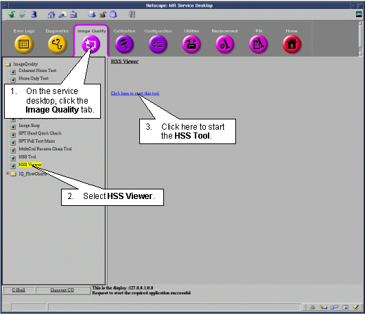
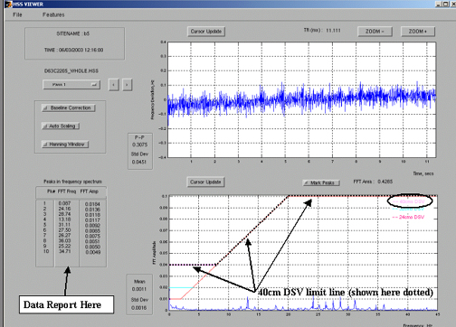
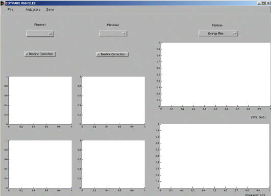

Proprietary to General Electric
Direction 5670000, Rev# 1
Optima MR450w 1.5T Service Methods
Module Version 1.0, Version Date 5/15/07
Proprietary to General Electric |
High Speed Stability plot and data results should be viewed using the HSS Viewer Tool. This provides many new ways to easily view the results. This is described in Section 1, Viewing Results with HSS Viewer. See Section 2, HSS Limits, concerning understanding if the results meet the specification or not. The results can also be reported with both graphics and text using the Report Manager tool, which is located under Utilities from the MR Service Desktop. Refer to the Report Manager Tool to view the HSS test results.
The HSS Viewer starts automatically after the execution of HSS Tool is finished. HSS Viewer can also be started manually. See Illustration 1.
Illustration 1: MANUALLY STARTING HSS VIEWER

Select [File], [Open], and then select the desired file from the list. See Illustration 2.
The results can be read from the bottom-most window. Note the 3 limit lines visible on the plot. Ensure that none of the peaks from the plot extend beyond the rose colored 40cm DSV limit line. See Illustration 3.
The results can also be compared to other HSS data sets using the Compare function under [Features]. See Illustration 4.
Explanations of the various options can be found under the Help pulldown at the top of the HSS Viewer GUI.
Illustration 2: HSS VIEWER FILE SELECTION

Illustration 3: VIEWING PLOTS USING HSS VIEWER

| NOTE: | Peaks in the plot near 0 Hz may not indicate a problem. If peaks are seen near the 0 Hz line, then enable “Base Line Correction” and see if the peaks decreases under the limit line. If the peaks do move under the limit line with “Base Line Correction” turned on, they can be ignored. |
Illustration 4: COMPARE SCREEN

Table 1 lists the frequency limits for fixed point stability for the 45Hz (vibration) bandwidth mode. At present, there are no specs for the 250Hz (electrical) bandwidth mode. Illustration 5 shows the allowable instability in the MR frequency, given the limits on the amplitude of the frequency components in a Fourier transform of (x1,y1,z1,t) for the 45Hz bandwidth mode.
Table 1: FREQUENCY LIMITS FOR FIXED POINT STABILITY (45HZ BW MODE ONLY)
| Frequency Deviation Limits For Fixed Point Stability (45Hz BW Mode) | Frequency Dev. (p-p) | Units |
| Frequency instability (p-p) | 0.5 p-p | Hz |
| Frequency instability, cold head off | 0.2 p-p | Hz |
HSS Area Measurement Specification: The upper limit is 1.2 for CERD, UCERD2, EXCITE and 1.9 for UCERD.
| NOTE: | Illustration 5 is to be used for low-frequency (45Hz) bandwidth tests only. |
Illustration 5: SYSTEM STABILITY WITH RESPECT TO FREQUENCY (45HZ BW MODE ONLY)

Scan Header (Refer to Table 2 for a description of the items in the scan header):
Illustration 6: Scan Header

Table 2: HEADER PARAMETERS DESCRIPTION
| Parameter | Legal Values | Source |
| SITENAME | SITE NAME | RAW HEADER |
USN | UNIQUE SYSTEM NUMBER (GECARES ISSUED) | Host.cfg FILE |
MLN | MOBILE LOCATION NUMBER (9999 = NON-MOBIL) | Mrconfig.cfg FILE |
SRVCONFIG | DATE/TIME MRCONFIG FILE LAST CHANGED | Mrconfig.cfg FILE |
EXCITER | (NOT USED) | (NONE) |
RECEIVER | STARTING RCVR #, ENDING RCVR #, PORT ENABLE # | SCAN Rx; Mrconfig.cfg FILE |
XMTRFCOIL | BODY, HEAD | RAW HEADER |
RCVRFCOIL | BODY, HEAD, <SURFACE COIL NAME> | RAW HEADER |
FREQ | MAGNET FREQUENCY | RAW HEADER |
TIME | YY/MM/DD HH:MM:SS | RAW HEADER |
BASERUN | BASE RUN NUMBER OF SCAN | RAW HEADER |
CONFIGCODE | (NOT USED) | (NONE) |
SOFTREV | SOFTWARE REVISION | “mrswrev” SCRIPT |
NUCLIDE | (NOT USED) | (NONE) |
HEADERCODE | ERROR # IF PROBLEM CREATING THIS TEST HEADER | CREATED BY TEST ANALYSIS |
REVCOILGAIN | CALIBRATION VALUE (TYP. 1-10) | CoilConfig.cfg FILE |
R1, R2, TG | 1-13, 1-15, 0-200 | RAW HEADER |
Exam “Comments” | UP TO 32 CHARACTERS FROM EXAM DESCRIPTION | IMAGE HEADER |
Series “Comments” | UP TO 29 CHARACTERS FROM SERIES DESCRIPTION | IMAGE HEADER |
Refer to Illustration 7 and Illustration 8 for a “typical” HSS average plot and data displayed in the Report Manager tool.
Illustration 7: AVERAGE DATA DISPLAY

Illustration 8: PLOT DISPLAY FOR AVERAGE HSS